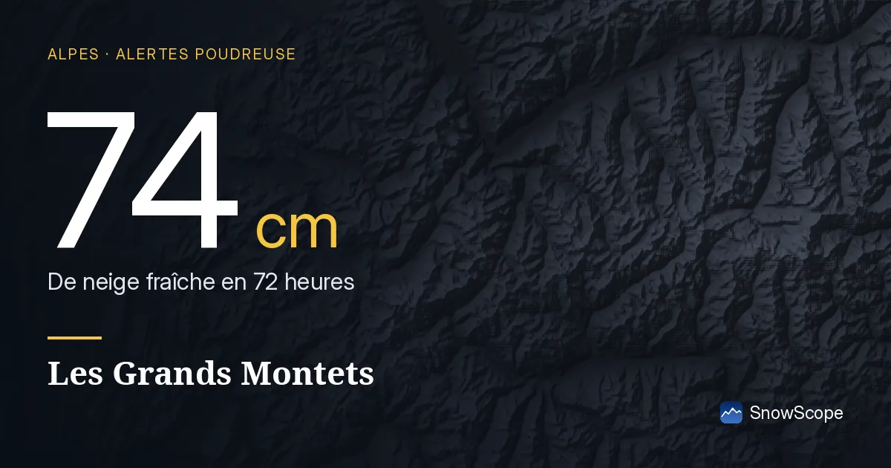

Les Grands Montets : 74 cm de neige fraîche en 72 heures
Notre modèle de neige indique que Les Grands Montets ont reçu 74 cm de neige fraîche ces dernières 72 heures, dont 44 cm rien que ces dernières 24 heures. Cela en fait l'un des meilleurs endroits pour la neige fraîche dans les Alpes.
Consultez les prévisions neige en temps réel pour Les Grands Montets sur l'application SnowScopeHauteurs de neige, alertes poudreuse et carte 3D, gratuitement.
Chutes de neige importantes dans les Alpes
Les Alpes ont connu une augmentation notable de l'enneigement. Au 17 novembre 2026, notre modèle indique 51 380 kilomètres carrés de surface enneigée, avec 772 stations signalant de la neige. C'est une diminution par rapport au 15 novembre, où 65 120 kilomètres carrés étaient couverts, mais une quantité importante de neige fraîche est tombée en haute altitude.
Pour les jours à venir, les prévisions suggèrent que la zone enneigée augmentera à 70 200 kilomètres carrés d'ici le 20 novembre, avec 945 stations qui devraient avoir de la neige. Cela indique une tendance positive pour les conditions de début de saison.
| Station | Hauteur de neige | Neige fraîche, 72 h | Attendu, jours suivants | Sommet |
|---|---|---|---|---|
| La Grave | 113 cm | 79 cm | 92 cm | 3 543 m |
| Les Grands Montets | 53 cm | 74 cm | 98 cm | 2 768 m |
| Orelle | 108 cm | 74 cm | 102 cm | 3 221 m |
| Alpe d'Huez Grand Domaine | 78 cm | 72 cm | 85 cm | 3 306 m |
| Glacier 3000 | 46 cm | 67 cm | 91 cm | 2 931 m |

De la pluie jusqu'en haut ?
Le mardi 17 novembre, l'isotherme 0 °C monte vers 2 860 m, au-dessus du sommet des remontées à 2 768 m : il peut pleuvoir jusqu'en haut.
La pluie sur la neige fraîche l'alourdit et, après une nuit froide, la rend glacée : les jours suivants conviennent mieux aux pistes damées qu'à la poudreuse.
Vers 2 001 m, Les Grands Montets a 22 cm aujourd'hui ; un 17 novembre normal y compte 22 cm.
C'est plus que lors de 24 des 46 hivers passés à cette date.
Les hivers passés, la meilleure neige à Les Grands Montets arrivait d'habitude fin février / début mars.
Jour après jour à Les Grands Montets : mardi 17 novembre 44 cm; mercredi 18 novembre 20 cm; jeudi 19 novembre 36 cm; vendredi 20 novembre 42 cm.
Altitude par altitude à Les Grands Montets : 1 234 m 0 cm au sol, 13 cm de plus dans les 7 prochains jours; 2 001 m 9 cm au sol, 78 cm de plus dans les 7 prochains jours; 2 768 m 40 cm au sol, 126 cm de plus dans les 7 prochains jours.
Où la neige est tombée en plus grande quantité
La Grave est en tête de la région avec 79 cm de neige fraîche ces dernières 72 heures, dont 40 cm ces dernières 24 heures. Les Grands Montets et Orelle ont également signalé 74 cm de neige fraîche sur 72 heures. L'Alpe d'Huez Grand Domaine a vu 72 cm, et Glacier 3000 en Suisse a reçu 67 cm.
Pour Les Grands Montets, les pistes supérieures ont actuellement une épaisseur modélisée de 53 cm. La station la plus proche, CHAMONIX-OBS à 1 043 m, n'a mesuré aucune neige fraîche le 15 novembre, ce qui est attendu étant donné son altitude plus basse par rapport à la limite pluie-neige de la station.
Prévisions pour les jours à venir
Plus de neige est attendue. Les Grands Montets devraient recevoir 98 cm supplémentaires dans les prochains jours, avec 20 cm le 18 novembre, 36 cm le 19 novembre et 42 cm le 20 novembre. La Grave est prévue pour 92 cm et Orelle pour 102 cm.
L'isotherme zéro degré aux Grands Montets restera principalement au-dessus de la base, allant de 1 940 m à 2 860 m au cours des prochains jours. Cela signifie que la neige fraîche tombera principalement en haute altitude, au-dessus de 1 960 m, où la limite pluie-neige est actuellement modélisée.
Comparaison de l'épaisseur de neige avec les hivers passés
Aux Grands Montets, l'épaisseur de neige modélisée à 2 001 m est de 9 cm aujourd'hui, 17 novembre. C'est inférieur aux 22 cm habituels pour cette date, basés sur 46 hivers passés. Cependant, l'épaisseur actuelle est toujours plus importante que 24 de ces hivers passés, ce qui suggère que, bien que non exceptionnelles, les conditions sont meilleures que la moyenne pour cette période de l'année.
La Grave, à 3 369 m, a une épaisseur modélisée de 99 cm, ce qui est plus important que 10 des 46 hivers passés. C'est un bon début de saison pour les zones de haute altitude.
Conseils aux skieurs
- Privilégiez les hautes altitudes pour la meilleure neige, car les isothermes zéro degré sont généralement élevés. Pour Les Grands Montets, le sommet de la station à 2 768 m devrait recevoir 126 cm de neige fraîche dans les 7 prochains jours.
- Soyez conscient du danger d'avalanche. Le niveau de danger d'avalanche pour Les Grands Montets, La Grave et Orelle est de 3 (considérable) aujourd'hui. Vérifiez toujours le bulletin d'avalanche officiel (BERA de Météo-France) avant de faire du hors-piste.
- Les conditions de début de saison signifient que l'enneigement peut être mince par endroits, surtout à basse altitude. Des rochers et d'autres dangers peuvent être présents sous la neige.
- La limite pluie-neige aux Grands Montets est modélisée à 1 960 m, attendez-vous donc à des conditions mitigées en dessous de cette altitude. L'épaisseur de neige à la base (1 234 m) est actuellement modélisée à 0 cm.
À propos de ces chiffres
Les hauteurs de neige des stations sont la neige la plus épaisse sur le haut du domaine, d'après le modèle de neige SnowScope (environ 1 km, calcul du 16 novembre) ; ce sont des estimations pour une zone, pas une mesure en un point. Les valeurs des stations de mesure sont mesurées à la date indiquée. Les prévisions peuvent changer. Consultez toujours le bulletin d'avalanche officiel avant le hors-piste.
Bulletins d'avalanche officiels: Météo-France BERA
Citer ce bulletin
Pour la recherche, l'enseignement ou la presse : chiffres et graphiques réutilisables librement sous CC BY 4.0 avec cette citation.
SnowScope (2026), Les Grands Montets : 74 cm de neige fraîche en 72 heures, https://snowscope.app/blog/fr/2026/11/alps-les-grands-montets-fresh-snow-powder-alert-17-november-2026.html, consulté le 2026-11-17
SnowScope (Atlas Labs). (2026, November 17). Les Grands Montets : 74 cm de neige fraîche en 72 heures. SnowScope snow reports. https://snowscope.app/blog/fr/2026/11/alps-les-grands-montets-fresh-snow-powder-alert-17-november-2026.html
BibTeX
@misc{snowscope2026alpslesgrandsmontetsfres,
author = {{SnowScope (Atlas Labs)}},
title = {Les Grands Montets : 74 cm de neige fraîche en 72 heures},
year = {2026},
month = nov,
howpublished = {\url{https://snowscope.app/blog/fr/2026/11/alps-les-grands-montets-fresh-snow-powder-alert-17-november-2026.html}},
note = {Published 2026-11-17 12:53 UTC; accessed 2026-11-17}
}· CC BY 4.0 · Méthodes, données et outils →
Les Grands Montets : neige et température selon l'altitude, cet hiver vs l'hiver dernier (outils) →
Suivre Les Grands Montets
Gratuit : un message quand la neige arrive, et la météo chaque matin.
Autres bulletins neige

L'Alpe d'Huez fait face au soleil. Comment organiser sa journée selon l'heure et l'altitude, avec la neige de 46 hivers passés, des villages bas au Pic Blanc.

Prévision de 79 cm de neige nouvelle aux Grands Montets du 16–18 novembre, principalement au-dessus de 2 000 m d'altitude, selon le modèle de prévision du 15 novembre.

Une carte des pentes des Grands Montets et de sept autres domaines skiables montre quelle part du terrain dépasse 30°, 35° et 40°, et pourquoi ce seuil compte pour les avalanches.